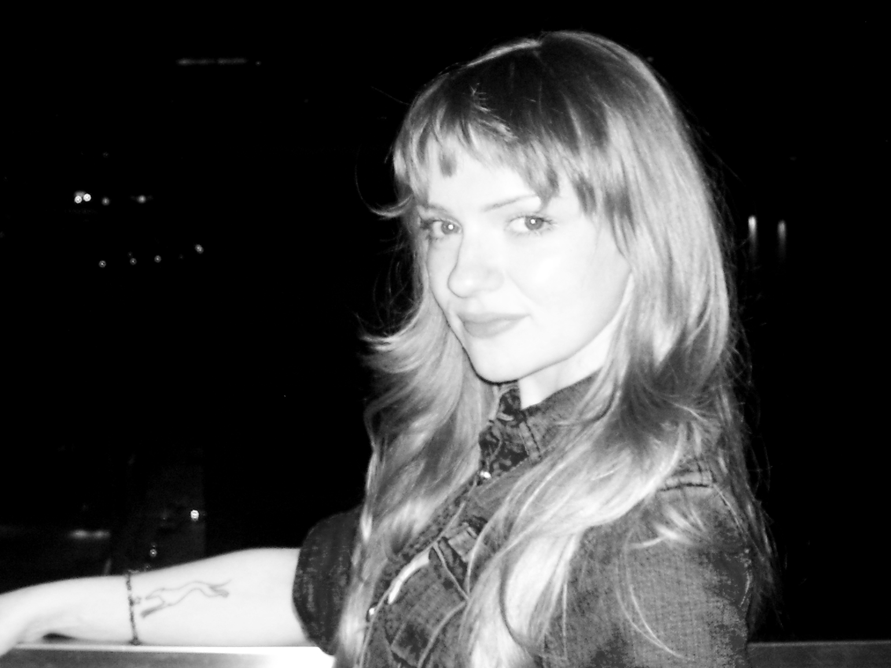

Evie Viktoria

I’m from Kansas City, born on the Kansas side, but I’ve lived most of my life just across the state line in Missouri. I was born in 2002 and grew up in a suburb outside the city with my parents and my older sister.
Childhood in the early 2000s felt like a whirlwind of shifting culture and rapid technological change, and I always felt a strange awareness of how quickly things were moving. I became acquainted with the reality of death at a very young age, and I believe that informed my hyperawareness of the passage and inevitability of time. This sentiment bleeds into my art and my personal work. It was fascinating to grow up alongside the rise of social media platforms, digital communication, and the art of capturing the world around us. It truly is a strange time to be alive.
I am almost constantly engaging in personal research and personal projects regarding digital preservation and relevant cultural and historical research for my generation, a generation primarily raised online and amidst the technology revolution. I have taken it upon myself to become somewhat of a “citizen internet archivist.” Through my social media work, I have not only deepened my connection with like-minded individuals but also acquired valuable skills in marketing and outreach, which have helped bring attention to the importance of archival work and historical preservation.
Education
- Metropolitan Community College Kansas City, Associate in Arts (A.A.), 2021-2023
- University of Missouri, Interdisciplinary BA: Digital Media, Communications, History, Certificate in World Digital Global Studies, 2023 – Present